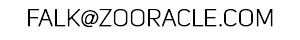
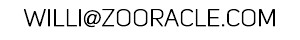
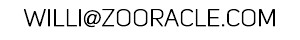

identify and classify animals, live!
Zooracle is a device that lets you take photos of animals and analyze
their unique visual patterns. Within minutes, the software is able to tell you,
whether an animal of a certain species, has already been found, or if it is a new individual.
Thanks to state-of-the-art computer vision algorithms, these assertions come with a very
high accuracy, namely around 90-100%!


Visual recognition is highly efficient, that means no more invasive marking methods are required - stress may be reduced, drastically.
Checkout our repository on GitHub and join our chat on Gitter.
figure: the Zooracle device. A Raspberry Pi Computer with a touchscreen and a camera,
in a custom-designed case (unit of length in centimeters).
- Raspberry PI B+ computer
- LCD touchscreen (PiTFT)
- battery (may be charged via USB, i.e. with solar panels)
- 5 MP camera (Raspberry Pi Cam Module, infrared optional)
- LED light (optional)
- GPS (optional)
- WiFi (optional)
- Take a photo of an individual animal, including fully automatic image quality check
- Run analysis and compare new individual with individuals in the local database
- Let the software assert, whether the individual is new or already exists (match)
- Manage database entries, add descriptions and export
figure: comparison example with yellow-bellied toads, visualizing
good keypoint matches. On the left: two images of the same individual. On the right: different individuals.
figure: feature cross-correlation within a test data set of yellow-bellied toads.
Same individuals match with very high significance, while unequal individuals deliver only a few good matches.
Contact
Falk Eckhardt, M.Sc., biology 
Willi Döring, M.Sc., software development lead 
Maria Goltsova, M.Sc., software development
(c) Zooracle 2015, all rights reserverd
Willi Döring, M.Sc., software development lead 
Maria Goltsova, M.Sc., software development
(c) Zooracle 2015, all rights reserverd